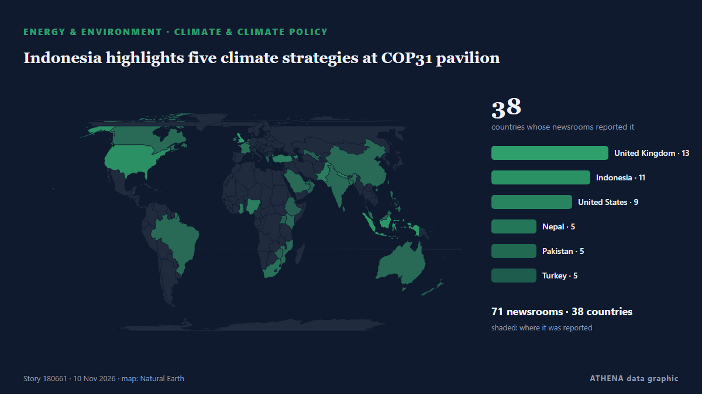

Ενέργεια, Πόροι & Περιβάλλον
ΧορηγούμενοΠαρουσιάζεται από  Cybernetics and Artificial Intelligence Lab Welcome to the Cybernetics and Artificial Intelligence Laboratory, established at the Department of Business Administration of the National and Kapodistrian University of Athens. The lab is headed by Professor Dimitrios Thomakos. The lab aims to do research that can be published in top venues. Our research uses tools and methods of Artificial Intelligence, and lies in the following areas: - Forecasting - Decision making - Cyber security - Finance We are always looking forward to collaborating with exceptional students!
Cybernetics and Artificial Intelligence Lab Welcome to the Cybernetics and Artificial Intelligence Laboratory, established at the Department of Business Administration of the National and Kapodistrian University of Athens. The lab is headed by Professor Dimitrios Thomakos. The lab aims to do research that can be published in top venues. Our research uses tools and methods of Artificial Intelligence, and lies in the following areas: - Forecasting - Decision making - Cyber security - Finance We are always looking forward to collaborating with exceptional students!
Οι τίτλοι των ειδήσεων παρουσιάζονται στα αγγλικά, όπως δημοσιεύτηκαν.

Κλίμα & κλιματική πολιτικήIndonesia highlights five climate strategies at COP31 pavilion
Civil society groups from Bangladesh, Bhutan and Nepal call for predictable, grant-based adaptation funding. από The Business Standard (Bangladesh) (working feed)
| 28 Οκτ | 89 |
|---|---|
| 29 Οκτ | 76 |
| 30 Οκτ | 94 |
| 31 Οκτ | 39 |
| 1 Νοε | 55 |
| 2 Νοε | 121 |
| 3 Νοε | 93 |
| 4 Νοε | 99 |
| 5 Νοε | 96 |
| 6 Νοε | 58 |
| 7 Νοε | 46 |
| 8 Νοε | 54 |
| 9 Νοε | 87 |
| 10 Νοε | 43 |
Allied Gold pours first gold at Ethiopia’s Kurmuk Mine
Allied Gold has achieved the first gold pour at its Kurmuk mine in Ethiopia, transitioning it into production and making it the company’s newest and lowest-cost operation. από Mining Technology
UNICEF says Israel blocks Gaza basin repairs, warns of flood risk
GENEVA: The UN children's agency said Israel had rejected the importation of equipment needed to repair a water basin in Gaza, and warned that the facility could overflow and endan... από Oman Observer
Azerbaijan, Türkiye, Georgia and Bulgaria sign clean energy agreement in Antalya - UPDATED
Azerbaijan, Georgia, Türkiye and Bulgaria are set to sign an intergovernmental agreement on strategic cooperation in clean energy during the 31st United Nations Climate Change Conference (COP31) in… από AzerNews
Russian attack leaves large parts of Dnipro and Kamianske without power
Damage to critical energy infrastructure in Dnipropetrovsk Oblast has disrupted electricity supplies to large parts of both cities and essential facilities. από Ukrainska Pravda (English)
Oil Prices Plunge Below $92 as Trump Signals Restraint on Iran
Crude oil prices dropped to less than $92 per barrel for Brent and $86 for WTI following reports citing President Trump as not planning to attack Iran “at this point”. από OilPrice.com
Iran War Set to Drive A Drop in Global Fossil Fuel Emissions in 2026
Global carbon dioxide emissions from fossil fuels are expected to drop by 0.4% in 2026 from a year earlier, due to the oil shock from the Iran war and increased solar and wind power generation, new… από OilPrice.com
ExxonMobil Takes First Step Toward Venezuela Oil Return
ExxonMobil said on Monday it signed a memorandum of understanding with Venezuelan state oil company PDVSA to assess upstream oil opportunities, marking a potential return to the country nearly two… από MarineLink
Shandong Marine’s LNG carrier nears delivery in China
China’s Nantong CIMC Sinopacific Offshore & Engineering has delivered Vitol’s liquefied natural gas (LNG) bunkering and supply vessel, Vivit Asia LNG. από LNG Prime
Turkey shuns Israel at Cop31 climate summit
Turkey did not invite Israel’s leaders to participate in the Cop31 climate summit, citing the mass killings of Palestinians in Gaza as the reason for its refusal, the minister running the talks has… από The National
‘We woke up soaking wet’: Gaza’s displaced face another winter of floods and collapsed shelters
Tens of thousands of makeshift shelters have been flooded, leaving families without dry bedding or protection from the cold as emergency crews struggle to cope with the worsening conditions. από TRT World
Saudi Arabia says East-West oil pipeline targeted in Medina, operations unaffected
RIYADH: The East-West pipeline in the Madinah region was targeted on Monday and the incident resulted in a limited fire which emergency teams extinguished, Saudi Arabia’s energy ministry reported. από Arab News
Israel too slow as floods ravage Gaza, says Trump 'Board of Peace'
TEL AVIV: President Donald Trump’s “Board of Peace” said Monday that Israel needed to act immediately to help war-battered Gaza cope with impending winter, saying measures ahead of deadly floods had… από New Straits Times
Greek inflation accelerates to 5.7% in October as natural gas prices surge 80%
Inflation in Greece rose to 5.7% in October, driven by sharp increases in energy, housing and transport costs. από ProtoThema English
Drones strike Russia’s second-largest oil refinery
A fire broke out at the Kirishi Oil Refinery (KINEF) in Russia’s Leningrad region following a drone attack overnight on November 9. από Ukrinform (English)
Türkiye reveals two new oil fields as COP31 opens in Antalya
Türkiye will use music, dance and art to bring its climate message to a global audience during the U.N. από Daily Sabah
Brent Crude Falls Below $90 for First Time Since August
Brent Crude prices plunged to below $90 per barrel early on Tuesday, falling below that threshold for the first time since August, as U.S. από OilPrice.com
COP31 opens in Türkiye with calls to turn climate pledges into action
The world is on track to miss climate targets, and governments are grappling with the consequences of climate change. από Council on Foreign Relations
Fog leads to air pollution alert and weather warnings
Visibility was reduced to less than 100m in some places overnight. από Evening Standard (London)
Oil falls over US$7 as Trump signals restraint on Iran
LONDON: Brent crude futures continued tumbling after settlement on Monday, losing more than US$7 a barrel to hit their lowest level since late August, after US President Donald Trump downplayed the… από New Straits Times
Greece-Cyprus power cable: No permission sought from Turkey as survey permits and NAVTEX issued, Marinakis says
The government has completed the licensing process and issued a NAVTEX for the Greece-Cyprus electricity interconnector, with the government spokesman insisting that neither Athens nor Nicosia has… από ProtoThema English
Rosneft introduces fuel sale limits at filling stations across Russia
30-liter city and 50-liter highway limits reported at Rosneft stations amid refinery disruptions. από Anadolu Agency (English)
World entering ‘age of climate extremes’, says UN chief
Antonio Guterres urged leaders at the COP31 climate conference in Turkey to 'get serious'. από Free Malaysia Today
IAEA condemns deadly drone strikes near Ukraine nuclear plant
UN nuclear watchdog chief calls for immediate end to attacks on plant personnel, warning of risks to nuclear safety. από TRT World
Moldova 'buys zero Russian gas,' launches new power line to EU
"For decades, Moscow used energy to blackmail us. από Kyiv Independent
Thick smog shrouds New Delhi after Diwali firecrackers add to seasonal pollution
New Delhi, home to over 30 million people, regularly ranks among the world's most polluted areas during winter, with pollution worsening in late October and November. από NPR
Six killed in Gaza flooding as tents collapse during downpours with 10,000 more displaced
Tens of thousands have had their tents flooded as torrential rains flooded camps in Gaza - aid agencies are warning of the risk of infectious disease spreading. από The Independent
Professor pinpoints 'most concerning' impact of polar vortex — not snow or climate change
'Unprecedented' weather patterns have led to fears that the polar vortex is going to unleash snow chaos on the UK. από WalesOnline
Heavy Rain Floods 70,000 Displacement Tents Across Gaza
Thousands of families face worsening conditions as winter storms leave tents flooded and belongings destroyed. από News of Bahrain
Ankara’s COP31 message: electrify, recycle, don’t mention coal
As the COP31 climate summit opened Monday in Antalya, the Turkish government put electrification at the center of its agenda, promoting renewable energy expansion and its Zero Waste initiative as… από Turkish Minute
Delhi records most polluted Diwali in five years; AQI remains ‘very poor’ a day after
India orders schools in and around Delhi to offer online classes, encourages people to work from home ahead of Diwali. από Express Tribune
22 injured as magnitude 5.7 earthquake hits central Japan: What we know
An earthquake with a preliminary magnitude of 5.7 hit central Japan early Sunday, leaving over 20 people injured in Aichi and Shizuok. από Mainichi (English)
Vaca Muerta export terminal advances as Jumbo Offshore completes installation campaign
Jumbo Offshore has installed two PLEMs and delivered two CALM buoys for the Vaca Muerta Oil Sur export terminal offshore Argentina. από World Oil
Petrobras Advances Tupi Oil Field Redevelopment with FPSO Design Approval
Petrobras has secured Approval in Principle (AiP) from Lloyd's Register (LR) for the conceptual design of its proposed REVIT I TUPI floating production, storage and offloading (FPSO) unit… από Offshore Engineer
Zaporizhzhia nuclear plant relying on generators again after losing external power supply
“The cause and location of the latest disconnection are not yet known,” the IAEA said. από The Straits Times